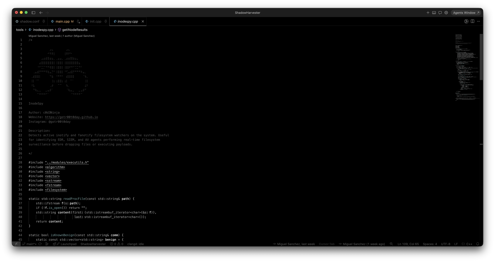

Lets explain what Inotify and Fanotify are use for in Linux. Both are Linux kernel mechanisms that let a process get asynchronous notifications when parts of the filesystem change. They are the usual building blocks for desktop search, IDEs, backup tools, containers, and security products that need to watch files in real time.
Once you have reached the post-exploitation phase, it is useful to identify any active inotify and fanotify filesystem watchers on the target system. Enumerating these watchers can help reveal the presence of EDR, SIEM, and antivirus agents that perform real-time file system monitoring. Detecting such controls before writing files to disk or executing payloads allows you to better understand the defensive visibility on the host and adjust your approach accordingly.
On a compromised host, security tools and logging pipelines often keep live visibility into disk: new binaries, config changes, SSH keys, cron, dropped web shells, lateral movement artifacts. The two main kernel APIs for that are inotify (many small watches) and fanotify (often whole filesystem / mount coverage, sometimes blocking before file access completes).
There may be unmonitored locations on the filesystem where files can be written without triggering immediate inspection. These blind spots typically occur when a security product has not placed a watch on the chosen staging directory. This is particularly common with solutions that rely primarily on inotify, since only explicitly monitored paths generate events. Identifying directories that are not covered by active watchers can reveal areas with reduced real-time visibility.
If you see fanotify fds on a process with a security ish name or system context, assume broad FS telemetry and possibly execution control on binaries and scripts under marked mounts.
I made this tool in C++ to specifically to watch the watchers.
On Linux, defenders and plenty of benign apps don't need to crawl the disk every few seconds to know something changed, they can ask the kernel to push events when files appear, change, or execute. InodeSpy is a small recon utility that answers a practical question for anyone doing security assessments or endpoint hygiene: which processes currently hold active filesystem watchers, and what might they be observing?
It detects active inotify and fanotify filesystem watchers on the system. Useful for identifying EDR, SIEM, and AV agents performing real-time filesystem surveillance before dropping files or executing payloads. It enumerates processes whose open file descriptors expose inotify or fanotify state via the kernel's procfs interface.
The tool also applies a benign process filter (desktop shells, session daemons, common desktop stack components, etc.) to reduce noise. That's a deliberate tradeoff: you see fewer lines, but the lines that remain are more likely to be unusual watchers worthy of manual review.

This is currently private but keep on the look out on my github for a realese: https://github.com/gotr00t0day
Assume anything you write under a mounted, marked tree may generate events; execution of new files is especially visible on fanotify heavy stacks. Plan what touches disk, where, and under which identity the same way you plan network egress and process telemetry.